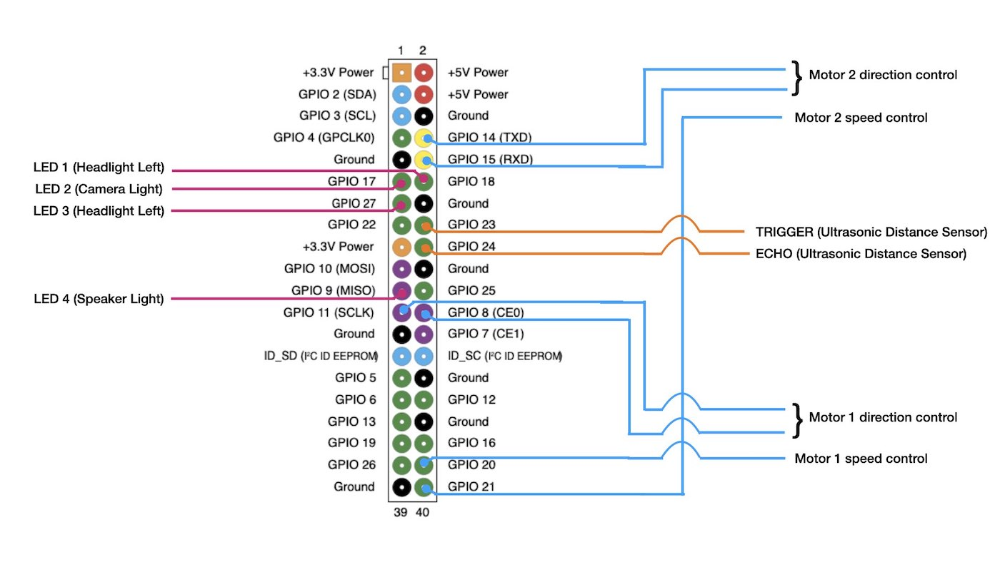
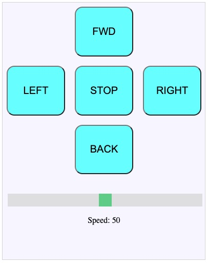
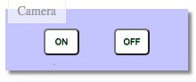
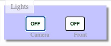
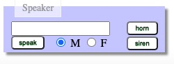
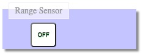
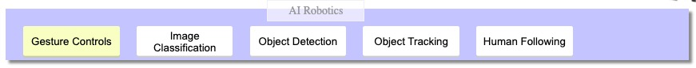

Earth Rover - The Raspberry Pi Robot
Hardware connections

Interface 12 V, 100 RPM DC Motors with Raspberry Pi using L293D based motor driver board.
Attach the Pi Camera to the Raspberry Pi. Don't forget to enable it in the preferences.
Read more about the hardware connections here
and here
Basic Robot
Direction and Speed Controls

The direction buttons send commands to GPIO pins 8 & 11 for motor 1 and GPIO pins 14 & 15 for motor 2.
The speed slider sends a value between 0-100 (in increments of 10) to server. This value is used to generate PWM on pins 20 & 21 simultaneously, resulting in speed control of motors.
Additional Hardware
Camera and light Controls
 
When you press camera 'ON' button, a python script 'earthrover/camera_lights/cam_server.py' is launched in the background and starts streaming the camera video.
The Light buttons toggles the state of GPIO pins 17, 18 & 27. You can connect simple LEDs directly to these GPIO pins or 12 V high brigthness LEDs through a transistor switching circuit.
Sound Controls

The robot can speak out a written text via a Text to Speech engine called 'espeak'.
Also, it can play pre-recorded mp3 files via built in 'omxplayer'.
Distance Sensor Controls

The toggle button launches the python script 'earthrover/range_sensor/range_sensor.py' in background.
The measured distance value is shown on the Control Panel.
In above picture, the distance measured by the sensor is 65.6 cm.
If the distance falls below 30cm, the robot is programmed to move back automatically
Javascript Robotics
Javascript code running in the browser can access the hardware (accelerometer, microphone, orientation etc) of your mobile phone / laptop.
But, to be able to access these sensors, the webpage containing the javascript code must originate from a server with 'https' enabled. That means the Apache webserver running on Raspberry Pi must have https enabled.
Each of the following buttons below open their respective https page. If you see a "NET::ERR_CERT_INVALID" error on Chrome and there is no "proceed to website" option, then you just type "thisisunsafe" directly in chrome on the same page. You should be able to see the page. Refer to this blog
Accelerometer Controls
Open the earthrover control panel using a mobile browser and press the 'Accelerometer' icon. The webpage with relevant Javascript code will appear and start capturing and sending the accelerometer data of your mobile phone to the server (Raspberry Pi).
You can now control the robot by tilting the phone.
Voice Controls
Open the earthrover control panel using a mobile/Laptop browser (Chrome) and press the 'Voice Control' icon. The webpage with relevant Javascript code will appear which takes voice input and converts
it to text and send to the server (Raspberry Pi).
You can now control the robot by speaking the valid commands. The list of valid commands are described in the link below.
Javascript Compass
Press the 'Compass' icon. The instructions to use are given on the webpage that appears.
This is just an example to demonstrate how you can use the orientation sensor of the mobile phone to control the robot direction precisely.
AI Robotics
Create Custom Models with ease: Teachable MachineSee various Pre-trained Models by Google Coral team: Pre-trained Models
This section contains projects that involve deployment of a custom / pre-trained model on Raspberry Pi to achieve advanced functionalities.

Gesture Controls
Using a laptop with web-cam, open chrome browser. Load the earthrover control panel and press the 'Gesture Controls' button. A page will appear with relevant functionality.
Press the start button, the web-cam will turn on and starts looking for the hand gestures. If a gesture is recognised, command corresponding to the gesture is sent to the server (Raspberry Pi) to actuate the GPIO pins.
You can notice that this button has a different color than rest of the buttons in this section. Because this is the only case where inference is happing on the browser. In other cases, inference is taking place on Raspberry Pi.
Image Classification
On the control panel, press the 'Image Classification' button. When this button is pressed, a python script 'image_recog_cv2.py' is launced in the background.
The camera view with results overlay can be accessed by by clicking  button.
Try to show different objects to the camera. You will see the results on browser. Also, the robot will speak out the name.
button.
Try to show different objects to the camera. You will see the results on browser. Also, the robot will speak out the name.
To stop the background script press the 'Image Classification' button once again. This will free up the camera for other tasks.
Object Detection
On the control panel, press the 'Object Detection' button. When this button is pressed, a python script 'object_detection_web2.py' is launced in the background.
A button  will appear. Click it to see the Web UI through which you can set object of interest.
To stop the background script press the 'Object Detection' button once again. This will free up the camera for other tasks.
will appear. Click it to see the Web UI through which you can set object of interest.
To stop the background script press the 'Object Detection' button once again. This will free up the camera for other tasks.
Object Tracking
On the control panel, press the 'Object Tracking' button. When this button is pressed, a python script 'object_tracking.py' is launced in the background.
A button  will appear. Click it to see the robot's camera view while it tracks an object.
To stop the background script press the 'Object Tracking' button once again. This will free up the camera for other tasks.
will appear. Click it to see the robot's camera view while it tracks an object.
To stop the background script press the 'Object Tracking' button once again. This will free up the camera for other tasks.
Human Following
On the control panel, press the 'Human Following' button. When this button is pressed, a python script 'human_follower.py' is launced in the background.
A button  will appear. Click it to see the robot's camera view while it tracks a person.
To stop the background script press the 'Human Following' button once again. This will free up the camera for other tasks.
will appear. Click it to see the robot's camera view while it tracks a person.
To stop the background script press the 'Human Following' button once again. This will free up the camera for other tasks.
*Practical Observation : If the power supply to Raspberry Pi is not adequate, the FPS drops.